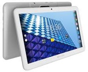
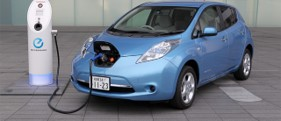

Avançoes Tecnológicos
2010: sensor e movimento nos jogos, tablets e carro elétrico.
 
Filmes/Desenhos/Séries
2013: “Thor 2: O Mundo Sombrio“
Músicas de Sucesso
2014: “Treasure” – Bruno Mars
Acontecimentos diversos
2010: Copa do Mundo FIFA sediada na África do Sul.